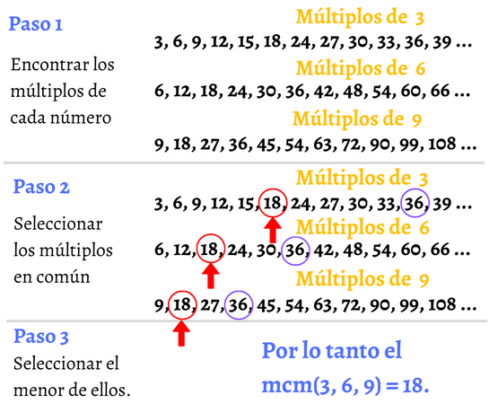

MÉTODO 1
El método del Mínimo Común Múltiplo (M.C.M.) puede entenderse fácilmente utilizando las tablas de multiplicar. Al buscar el M.C.M., estamos buscando el primer múltiplo común de dos o más números. Con la ayuda de las tablas de multiplicar, podemos identificar rápidamente estos múltiplos y encontrar el más pequeño que sea compartido, facilitando la resolución de problemas y la factorización. ¡Es un enfoque práctico y visual para aplicar en diversos cálculos matemáticos!